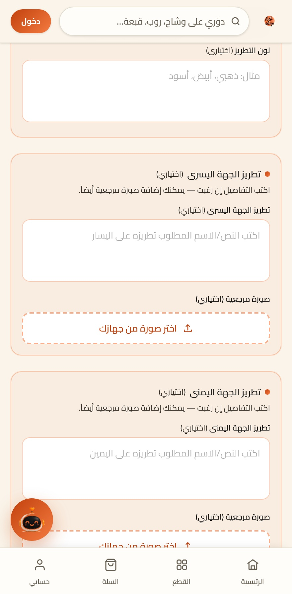
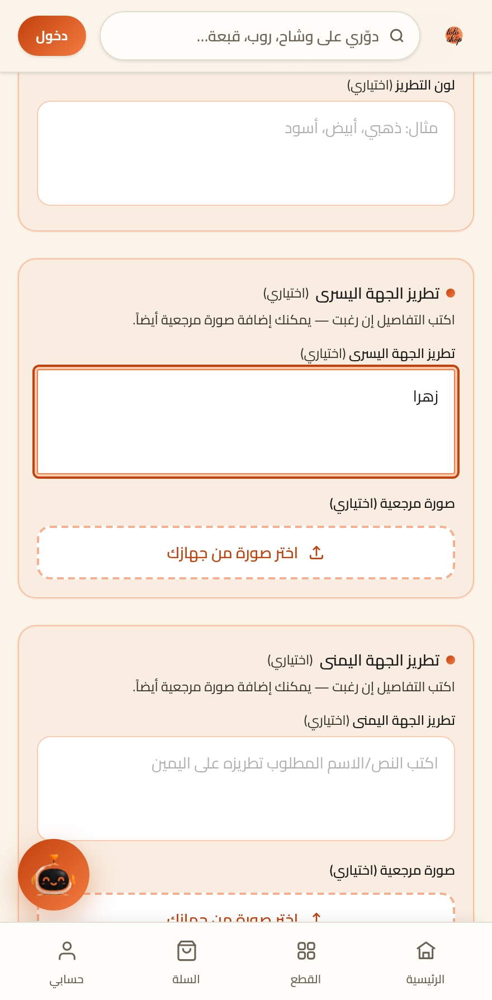
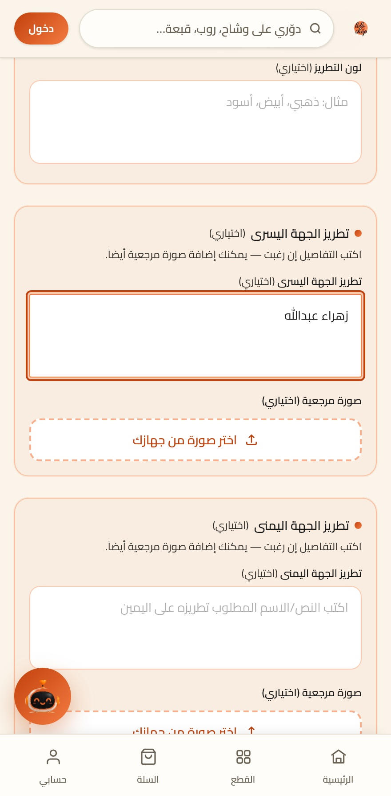
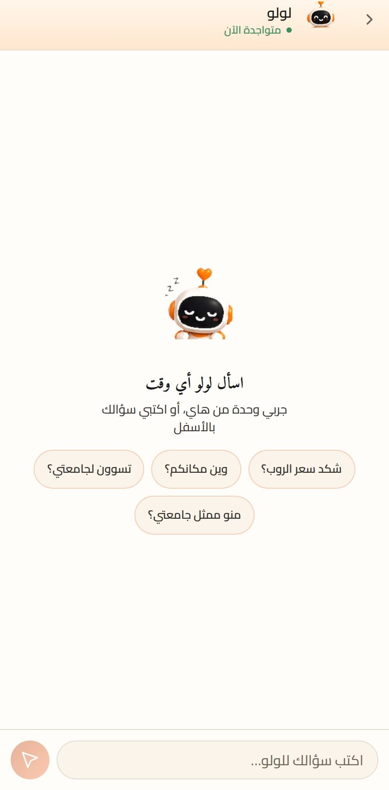
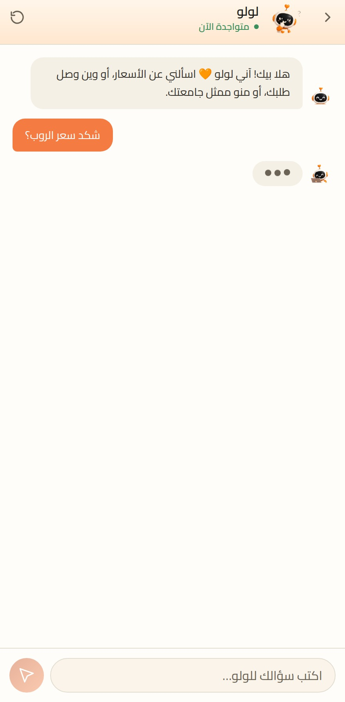
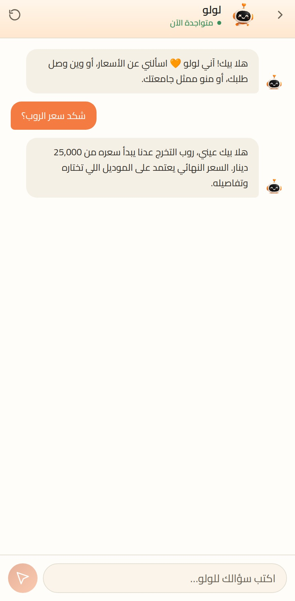
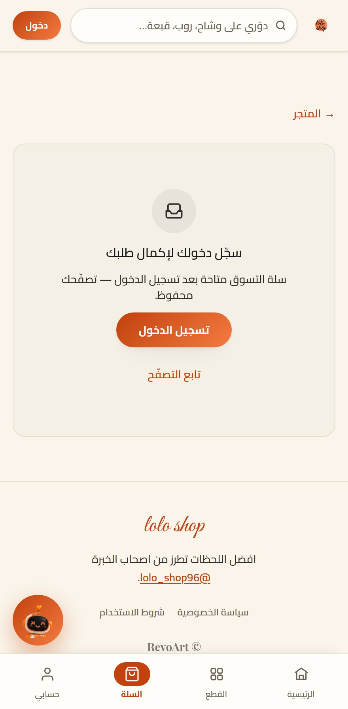
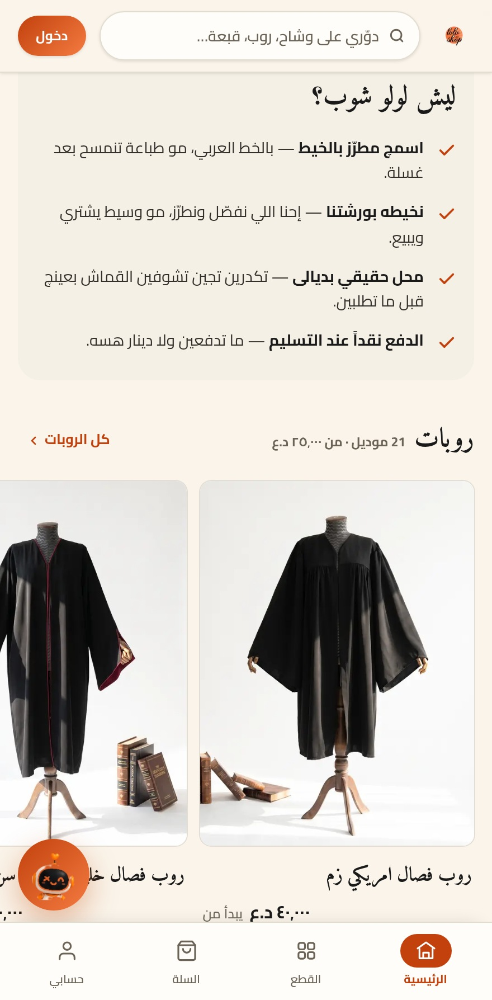

تطبيق لولو شوب
٥٤ موديل تخرّجبجيبك
أوشحة · روبات · قبعات · شالات
تصفّحها كلهامن التلفون
وشاح ملكي — ٣٠٬٠٠٠ د.ع
اختار لونكوشكلك
تكتبه إنت — ونطرّزه إحنا
اكتب اسمكبالخط العربي
تسأل، وتجاوبك على طول
ولولو وياكبالتطبيق
ما تدفع ولا دينار هسه
الدفع نقداًعند التسليم
٢٬١٠١ طالب وطالبة سجّلوا معنا
ودفعتك كلهاتقدر تطلب سوية










٩:٤١
حمّل تطبيق لولو شوب
واسمك يوصلك مطرّز بالخيط
Download onApp Store
Get it onGoogle Play
@lolo_shop96 · lolo-shop96.com